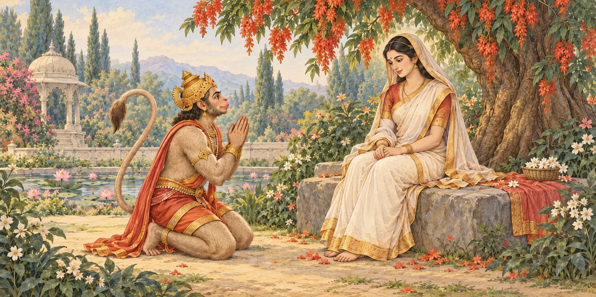
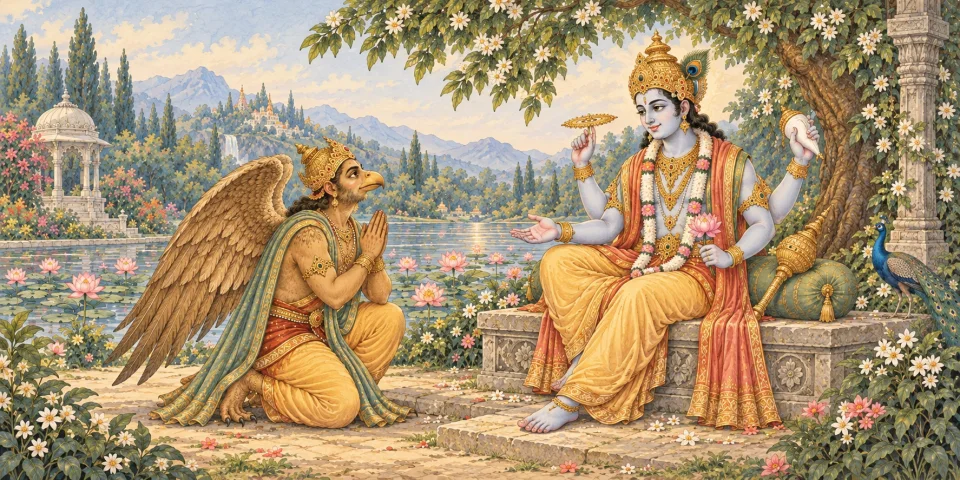

VEDANSH · SAVED STYLE 3 TEMPLATE
Garud Puran — final banner preview
All nine scenes restyled using the saved template’s approved Hanuman–Sita master. Compare the complete paintings at the same scale, then check their 360 × 180 reader size.
Latest approved reader artworkHanuman meets Sita · retained template reference
Garud Puran · revisedGaruda and Vishnu
All nine revised banners
Actual reader banner size
Approved reference · 360 × 180Selected Garud banner · 360 × 180